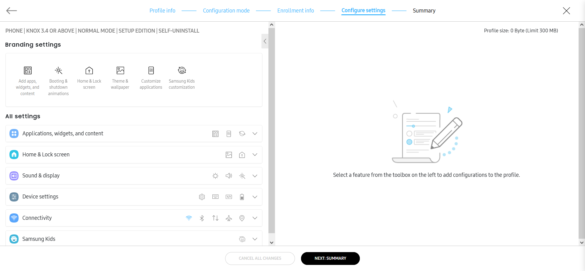
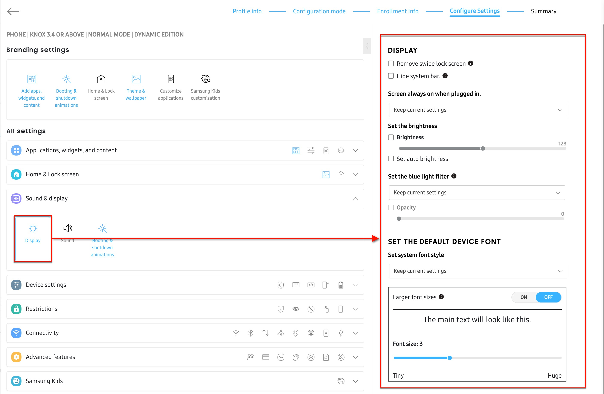
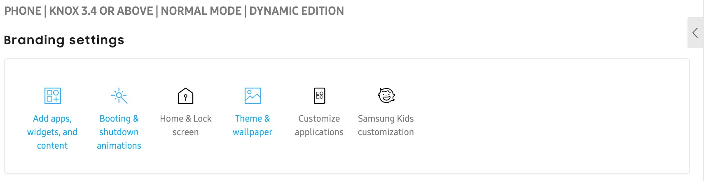

Navigating the Configure settings tab
Last updated October 7th, 2025
The Configure settings tab of the profile creation wizard is where you can customize the appearance and functionality of your enterprise devices.

Left and Right panels
On the left-panel, you’ll find all available profile customization settings. When you select a setting, the right-panel displays the available customization options for that setting.

Branding settings toolbar
To help you quickly customize your fleet’s wallpaper, animations, and themes, you can use the Branding settings toolbar located at the top of the page. When you click any setting in this toolbar, the corresponding setting will also be selected under All settings, and the available options will display on the right-panel.

All settings
All available profile customization settings are grouped into categories. Select a category to expand the accordion and view its settings. The following categories are available: